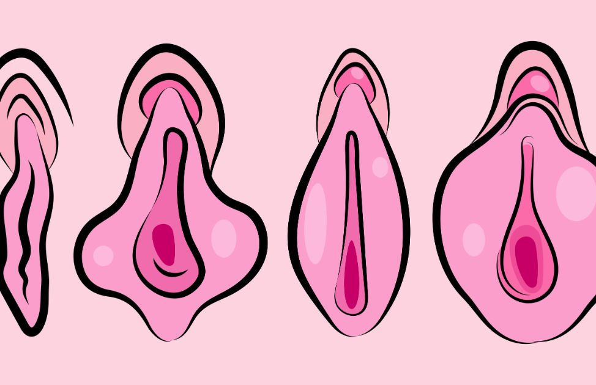

Parliamo de Il Cazzo
Il pene è l'organo copulatorio maschile tipico dei mammiferi ma presente anche in altri phyla. Nei mammiferi costituisce, con i testicoli, l'apparato riproduttivo esterno del maschio. Svolge anche le funzioni escrettive, come ultimo tratto interessato alla minzione. Gli organi genitali esterni sono apparsi nel devoniano, circa 410 milioni di anni fa, quando i tetrapodi hanno iniziato ad abbandonare l'ambiente acquatico. Si rendeva infatti necessario ovviare all'assenza di fase liquida in cui rilasciare i gameti e ciò si ottenne attraverso il passaggio alla fecondazione interna. Tra gli amnioti lo sviluppo di pene erettile è avvenuto indipendentemente per mammiferi, tartarughe, rettili e arcosauri, cioè coccodrilli e uccelli. Nel corso dell'evoluzione gli uccelli hanno perduto questo organo, ad eccezione di Paleognati e Anseriformi[2].

Parliamo de La Figa
Nei mammiferi, la vagina (dal latino vagina, letteralmente "fodero" o "guaina"[1]) è la parte elastica e muscolare del tratto genitale femminile ed è costituita da un canale fibromuscolare molto elastico che serve da supporto al collo dell’utero e all'uretra. Negli esseri umani, si estende dalla vulva alla cervice. Normalmente, l'apertura vaginale esterna è parzialmente coperta da una membrana chiamata imene. Si tratta dell'organo femminile interessato nel rapporto sessuale e, come canale ultimo, nel parto. Essa canalizza anche il flusso mestruale (mestruazioni), che si ha negli esseri umani e nei primati come parte del ciclo mestruale mensile. Sebbene la ricerca sulla vagina sia particolarmente carente per diversi animali, la sua posizione, struttura e dimensioni sono documentate come variabili tra le specie. Le femmine dei mammiferi hanno solitamente due aperture esterne nella vulva, l'apertura uretrale per il tratto urinario e l'apertura vaginale per il tratto genitale. Ciò si differenzia dai mammiferi maschi che solitamente hanno una singola apertura uretrale sia per la minzione che per la riproduzione. L'apertura vaginale è molto più grande della vicina apertura uretrale ed entrambe, nelle femmine umane, sono protette dalle labbra. Negli anfibi, negli uccelli, nei rettili e nei monotremi, la cloaca è l'unica apertura esterna per il tratto gastrointestinale, il tratto urinario e il tratto riproduttivo. Anche gli insetti femmina ed altri invertebrati hanno una vagina, che è la parte terminale dell'ovidotto.[2] Per favorire una penetrazione della vagina durante il rapporto sessuale o altre attività sessuali, l'umidità vaginale aumenta durante l'eccitazione in tutte le femmine dei mammiferi, fornendo così una lubrificazione vaginale, che riduce l'attrito. Infatti, la struttura delle pareti vaginali crea un certo attrito con il pene durante il rapporto e questo comunque contribuisce allo stimolo verso l'eiaculazione, consentendo la fecondazione. Le attività sessuali, sia eterosessuale che omosessuali, possono provocare nelle donne infezioni sessualmente trasmissibili (STI), il cui rischio può essere ridotto con ricorrendo a pratiche sessuali sicure. Ulteriori problemi di salute possono interessare anche la vagina umana. La vagina e la vulva hanno suscitato forti reazioni nelle società nel corso della storia, comprese percezioni e linguaggio negativi, tabù culturali e il loro uso come simboli per la sessualità femminile, per la spiritualità o la rigenerazione della vita. Nel linguaggio comune, la parola vagina è spesso usata per riferirsi alla vulva o ai genitali femminili in generale. In una precisa definizione anatomica, tuttavia, con il termine vagina ci si riferisce esclusivamente alla specifica struttura interna, e comprendere la distinzione può migliorare la conoscenza dei genitali femminili e aiutare nella comunicazione sanitaria.
Parliamo de Il Seno
La mammella (IPA: /mamːˈɛlːa/) è un organo ghiandolare che nelle femmine di mammifero secerne il latte. Si tratta di una struttura caratterizzante la classe dei mammiferi, in particolare gli euteri, l'unico gruppo con evidenti mammelle esterne, presenti peraltro anche nei metateri all'interno della sacca marsupiale. Nel genere umano l'organo femminile, oltre che strumento di nutrizione, a seguito dello sviluppo nel telarca, è anche una caratteristica sessuale secondaria nella donna e può essere visto anche nella sua valenza simbolica. In italiano, tale organo viene comunemente e meno precisamente chiamato seno.
Parliamo de I Glutei
I glutei sono un gruppo di tre muscoli che si trovano in posizione posterolaterale rispetto alla pelvi ossea e all'estremità prossimale del femore. I suoi muscoli hanno il compito di abdurre, estendere e ruotare lateralmente il femore rispetto all'osso dell'anca. Comunica in direzione anteromediale con la cavità pelvica e il perineo, attraverso il grande e il piccolo forame ischiatico. Inferiormente si continua con la regione posteriore della coscia.